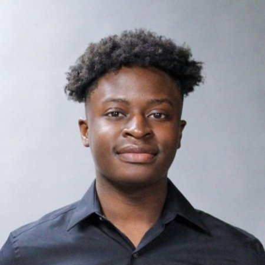

I tell stories through video, and I know why they work.
About
I'm a media production and marketing strategist finishing an MBA at Mercy University in New York, with a Communications degree from Michigan State University behind me. My work sits at the intersection of two things I care about: making video that actually looks and sounds right on set, and understanding the marketing strategy that decides whether that video reaches anyone.
Day to day, I run social media and content strategy for a Michigan nonprofit, and I've spent this year in the control room and behind the camera at PBS Michiana — WNIT, working multi-camera live tapings, technical direction, and studio operation. Outside of production work, I turn songs I like into slowed-and-reverb edits, just for fun.

- BasedNew York, NY
- FromSt. Joseph, MI
- EducationMBA Candidate, Mercy University (Marketing) — BA, Michigan State University (Communications, Leadership & Strategy)
- CurrentlySocial Media & Digital Communications Coordinator, LADD Inc. (4.5+ years) — Production & Marketing Intern, PBS Michiana / WNIT
Reel & Videos
- Dinner & a Book — Season 26, Episode 6
- Dinner & a Book — Season 26, Episode 5
- Unity Gardens Special
- Dinner & a Book — Season 26, Episode 4
- Experience Michiana — Episode #1534
- Education Counts — What's Conscious Discipline?
- Dinner & a Book — Season 26, Episode 2
- Crossroads — St. Joseph Woodshop Builds Coffins, Caskets, and Urns for the Community
- "Back to Back" — 30 For 30 Documentary
Photography
A selection of photos I've shot and edited, mostly on a Canon EOS R50.
Resume
- Own end-to-end social media strategy and content production across multiple platforms, translating organizational updates into inclusive, audience-targeted content that increased online engagement by 40% within one year.
- Manage a recurring content and events calendar, coordinating announcements across social channels and the organization's website to keep the surrounding community consistently informed.
- Operate studio cameras and support technical direction during multi-camera live tapings for station programming, while assisting with production logistics for on-location and studio shoots across documentary, broadcast, and promotional formats.
- Capture and encode raw camera footage, edit episodes in Adobe Premiere Pro, and repurpose long-form documentaries and station programs into short-form video content for social platforms, extending program reach across digital channels.
- Researched and pitched weekly story angles for the entertainment and music team, tracking emerging artists, releases, and entertainment events to keep coverage timely.
- Wrote and edited articles for the station's entertainment desk, collaborating with the creative team to shape story angles from pitch to publish.
- Directed daily operations for a multi-program student engagement team, training and onboarding staff to ensure consistent execution across concurrent initiatives, including the MSU Spartan Shelf Basic Needs & Food Bank Program.
- Produced internal reports and communications for cross-departmental stakeholders, maintaining alignment and clear information flow across a large university department.
- Helped lead research and creative development for a Tide campaign that won District 6 (Midwest region), placing first, and was selected as one of eight national finalist campaigns in the National Student Advertising Competition.
- Concepted and designed social-first ad executions for TikTok, Instagram, Facebook, and YouTube Shorts as part of the national campaign pitch.
Projects
A capstone consulting project (COM 480) for WKAR, Michigan State's PBS/NPR affiliate: a strategic plan to close a stark awareness gap with Gen Z. Our research found half of surveyed 18-24-year-olds had never heard of WKAR, and nearly two-thirds of those who had didn't know its programming, while comparable PBS affiliates were pulling 130,000+ views on a single TikTok.
As the team's Data Analyst, I built and ran the awareness survey, analyzed the results, including WKAR's awareness split and where Gen Z actually spends its media time versus the general population, and benchmarked WKAR against PBS affiliates already succeeding on TikTok and Instagram to find what was working.
The plan recommended WKAR lean into short-form, platform-native content, lead with local and relatable stories, and focus on campus-specific engagement, using WKAR's own PBS nostalgia as an emotional hook rather than competing head-on with native creators.
View presentation (PDF)A National Student Advertising Competition entry for Tide: a campaign built to convert laundry habits toward cold water, backed by roughly 1,000 hours of research, including a 628-person primary survey. The research found people weren't against sustainability, they just wouldn't prioritize it unless it was also easier and cheaper, which shaped the winning creative direction: "Cold Therapy" ("Help your clothes relax"), tested head-to-head against a more guilt-driven concept and chosen for scoring higher on relevance, believability, and clarity. The full plan spanned streaming, social, influencers, out-of-home, and retail, with partnerships with Levi's and Frito-Lay, on a $75M budget.
As part of the Creative Design Team, I concepted and designed social-first ad executions for TikTok, Instagram, Facebook, and YouTube Shorts. The campaign won District 6 (Midwest region), placing first, and was selected as one of eight national finalist campaigns.
Built with Agency 340, American Advertising Federation (MSU Chapter), for the National Student Advertising Competition.
View plans book (PDF)A student-produced, "30 for 30"-style documentary tracing three generations of Lakeshore Lancers baseball state championship teams (1990, 2017, 2018), built around a shared theme of community legacy.
I worked across research, outreach, and production: digging through archives, game footage, and yearbooks to reconstruct the 1990 championship team's story, tracking down and helping schedule alumni interviews, and shooting on the camera crew, filming player and coach interviews and capturing aerial drone footage for B-roll.
The film premiered February 15, 2019, at halftime of a varsity basketball game alongside the school's State Championship Ring Ceremony, screened in the school auditorium for players, families, and the community.
Watch the documentarySkills & Equipment
Production
- Multi-Camera Live Production
- Technical Directing
- Studio Camera Operation
- Adobe Premiere Pro
- Adobe Media Encoder
- Adobe Lightroom
- Adobe Photoshop
- Adobe InDesign
- Adobe After Effects
- Adobe Audition
- Logic Pro
- Serato
- Final Cut Pro
Equipment
- Ikegami HDK-790D Studio Cameras
- Canon DIGISUPER 25 XS Lenses
- Sony PXW-Z200 4K XDCAM
- Canon EOS R50
- Sony Mirrorless Camera (FX3 / a7S III)
- Sony FE 70-200mm f/2.8 GM OSS II
- Atomos External Monitor-Recorder
Marketing & Certifications
- Social Media Management
- Digital Content Creation
- Data Analysis & Reporting
- Meta Business Suite
- Google Ads — Display & Measurement
- Google — Fundamentals of Digital Marketing
- Bloomberg Spreadsheet Analysis
- YouTube Asset Monetization & Content Ownership